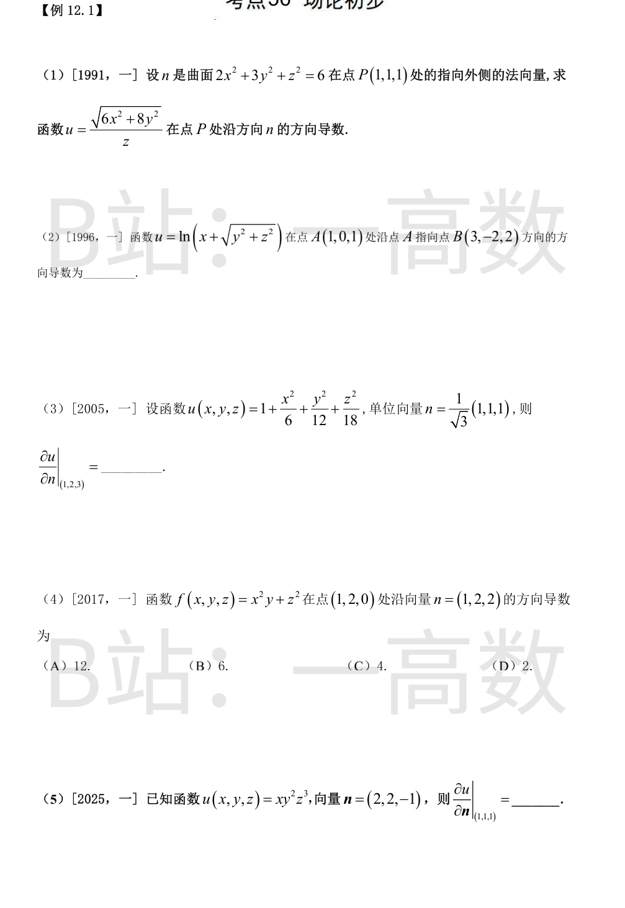
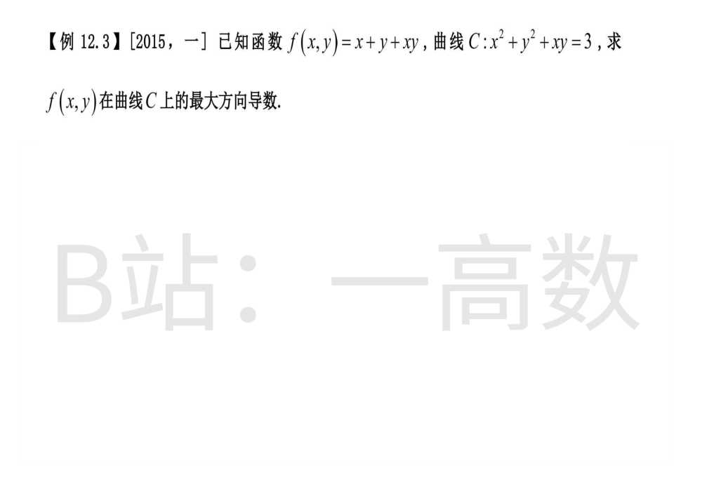
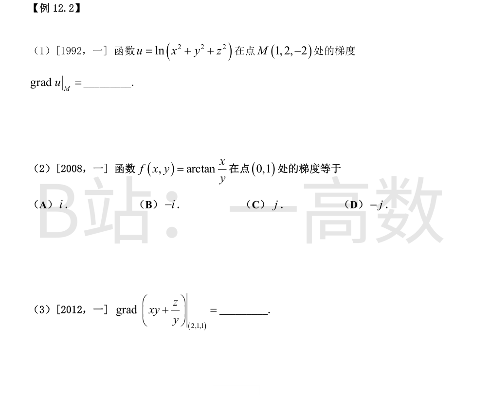
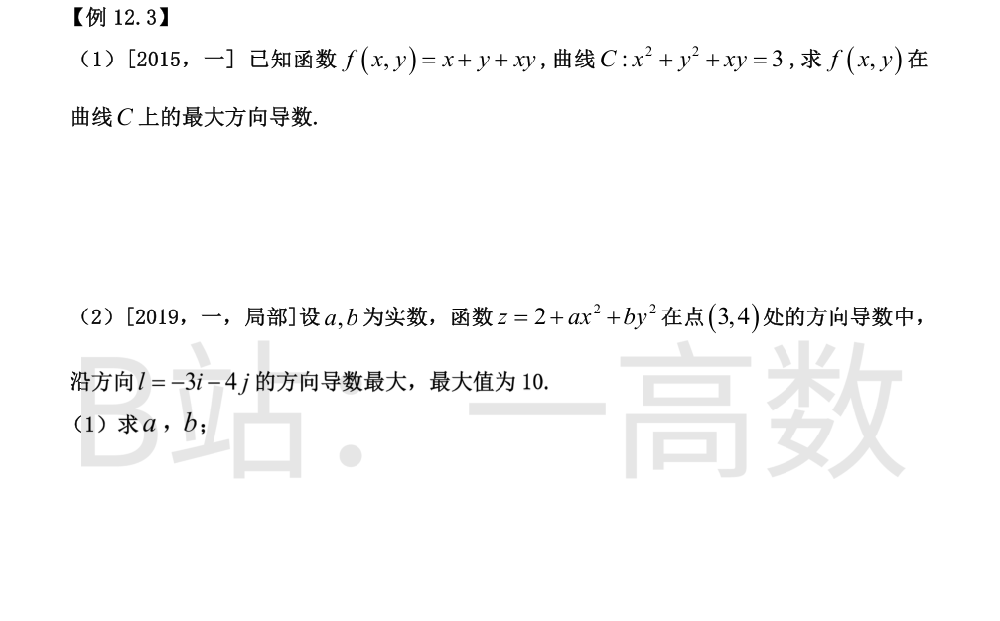
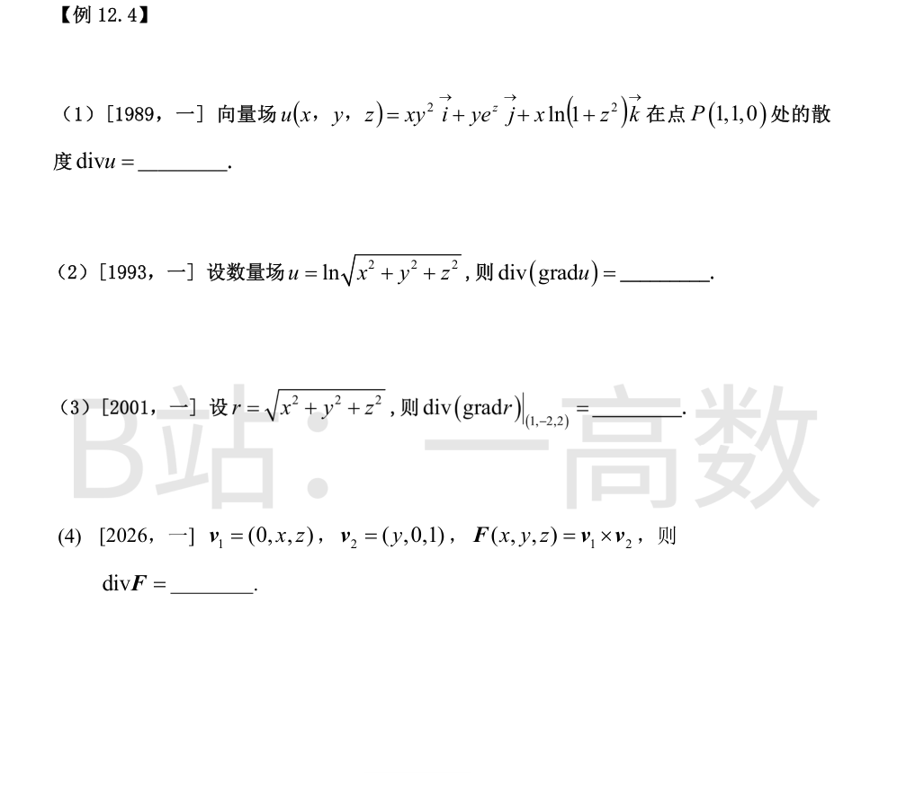

F=2x²+3y²+z²-6，∇F=(4x,6y,2z)|(1,1,1)=(4,6,2)∥(2,3,1)，指向外侧，n̂=(2,3,1)/√14。
记 g=√(6x²+8y²)，P 处 g=√14：
$$u_x=\frac{6x}{z\sqrt{6x^2+8y^2}}\to\frac{6}{\sqrt{14}},\quad u_y=\frac{8y}{z\sqrt{6x^2+8y^2}}\to\frac{8}{\sqrt{14}},\quad u_z=-\frac{\sqrt{6x^2+8y^2}}{z^2}\to-\sqrt{14}.$$
$$\frac{\partial u}{\partial n}=\nabla u\cdot\boldsymbol{\hat n}=\frac{1}{\sqrt{14}}\left(\frac{12}{\sqrt{14}}+\frac{24}{\sqrt{14}}-\sqrt{14}\right)=\frac{36}{14}-1=\frac{11}{7}.$$
（分母中 z=1，P 点各偏导均有定义。）
AB=(2,-2,1)，|AB|=3，方向单位向量 l̂=(2,-2,1)/3。
在 A 处 x+√(y²+z²)=2：
$$u_x=\frac{1}{x+\sqrt{y^2+z^2}}\to\frac12,\quad u_y=\frac{y}{(x+\sqrt{y^2+z^2})\sqrt{y^2+z^2}}\to0,\quad u_z=\frac{z}{(x+\sqrt{y^2+z^2})\sqrt{y^2+z^2}}\to\frac12.$$
$$\frac{\partial u}{\partial l}=\frac12\cdot\frac{2}{3}+0+\frac12\cdot\frac{1}{3}=\frac{1}{2}.$$
（√(y²+z²) 在 A 处为 1，u_y, u_z 的分母非零，计算合法。）
∇u=(x/3, y/6, z/9)|(1,2,3)=(1/3, 1/3, 1/3)。
$$\frac{\partial u}{\partial n}=\nabla u\cdot\frac{(1,1,1)}{\sqrt3}=\frac{1/3+1/3+1/3}{\sqrt3}=\frac{1}{\sqrt3}=\frac{\sqrt3}{3}.$$
（数值上该点近似为函数「远点」，梯度小、方向导数小，与 1/√3≈0.577 相符。）
∇f=(2xy, x², 2z)|(1,2,0)=(4,1,0)，|n|=√(1+4+4)=3。
$$\frac{\partial f}{\partial n}=\frac{4\cdot1+1\cdot2+0\cdot2}{3}=\frac{6}{3}=2.$$
选 (D)。
∇u=(y²z³, 2xyz³, 3xy²z²)|(1,1,1)=(1,2,3)，|n|=√(4+4+1)=3。
$$\frac{\partial u}{\partial n}=\frac{1\cdot2+2\cdot2+3\cdot(-1)}{3}=\frac{3}{3}=1.$$

$$\operatorname{grad}u=\left(\frac{2x}{r^2},\frac{2y}{r^2},\frac{2z}{r^2}\right),\quad r^2=1+4+4=9.$$
grad u|_M=(2/9, 4/9, -4/9)=(2/9)(1,2,-2)。
【仲裁修正】独立校验发现分歧，经仲裁重解，以本答案为准：grad u=2(x,y,z)/(x^2+y^2+z^2)，在M(1,2,-2)处r^2=9，梯度为\frac{2}{9}(1,2,-2)；A/B答"3"与梯度不符
$$f_x=\frac{1/y}{1+x^2/y^2}=\frac{y}{x^2+y^2}\to1,\qquad f_y=\frac{-x/y^2}{1+x^2/y^2}=-\frac{x}{x^2+y^2}\to0\ \ (\text{在}(0,1)).$$
grad f=(1,0)=i。选 (A)。
u=xy+z/y：u_x=y，u_y=x-z/y²，u_z=1/y。
在 (2,1,1)：u_x=1，u_y=2-1=1，u_z=1。grad u=(1,1,1)。

最大方向导数 = 该点 |∇f| 的最大值。∇f=(1+y, 1+x)，|∇f|²=(1+x)²+(1+y)²。
拉格朗日乘数法：2(1+x)=λ(2x+y)，2(1+y)=λ(2y+x)。
两式相减：2(x-y)=λ(x-y) ⟹ x=y 或 λ=2。
① x=y：3x²=3 ⟹ x=±1：(1,1) 时 |∇f|²=8；(-1,-1) 时 |∇f|²=0。
② λ=2：1+x=2x+y ⟹ y=1-x，代入 x²+(1-x)²+x(1-x)=3 ⟹ x²-x-2=0 ⟹ x=2 或 -1，得点 (2,-1), (-1,2)，|∇f|²=0+9=9。
最大 |∇f|=√9=3。
∇z|(3,4)=(2ax, 2by)|(3,4)=(6a, 8b)。
方向导数沿梯度方向取得最大值 |∇z|=10，且梯度方向与 (−3,−4) 同向：
$$(6a,8b)=10\cdot\frac{(-3,-4)}{5}=(-6,-8)\ \Longrightarrow\ a=-1,\ b=-1.$$
（若 (6a,8b) 与 (−3,−4) 反向则最大方向为 −l，与题设矛盾，故只取同向解。）

$$\operatorname{div}u=\frac{\partial(xy^2)}{\partial x}+\frac{\partial(ye^z)}{\partial y}+\frac{\partial(x\ln(1+z^2))}{\partial z}=y^2+e^z+\frac{2xz}{1+z^2}.$$
P(1,1,0)：1+1+0=2。
u=(1/2)ln r²，grad u=(x,y,z)/r²，r²=x²+y²+z²。
$$\frac{\partial}{\partial x}\left(\frac{x}{r^2}\right)=\frac{r^2-2x^2}{r^4},$$ 三项相加：
$$\operatorname{div}(\operatorname{grad}u)=\frac{3r^2-2r^2}{r^4}=\frac{1}{r^2}=\frac{1}{x^2+y^2+z^2}.$$
grad r=(x,y,z)/r。
$$\frac{\partial}{\partial x}\left(\frac{x}{r}\right)=\frac{r-x\cdot(x/r)}{r^2}=\frac{r^2-x^2}{r^3},$$ 三项相加：
$$\operatorname{div}(\operatorname{grad}r)=\frac{3r^2-r^2}{r^3}=\frac{2}{r}.$$
在 (1,-2,2)：r=√(1+4+4)=3，故 div(grad r)=2/3。
$$F=v_1\times v_2=\begin{vmatrix} i&j&k\\0&x&z\\y&0&1\end{vmatrix}=(x\cdot1-z\cdot0,\ z\cdot y-0\cdot1,\ 0\cdot0-x\cdot y)=(x,\ yz,\ -xy).$$
$$\operatorname{div}F=\frac{\partial x}{\partial x}+\frac{\partial(yz)}{\partial y}+\frac{\partial(-xy)}{\partial z}=1+z+0=1+z.$$